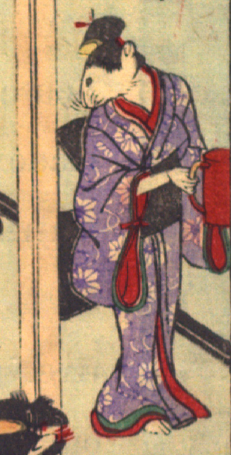

女の鼠。髪を結い、簪を挿し、紫色の着物に黒い帯を締めている。朱色の容器を持ち、立っている。手は人間のものである。
著作者：David Thompson／出典：親書誌：U426_nichibunken_0112：Nedzumi no Yome-Iri／日付：2006／資源識別子：U426_nichibunken_0112_0005_0004
Copyright (c)2010- International Research Center for Japanese Studies, Kyoto, Japan. All rights reserved.